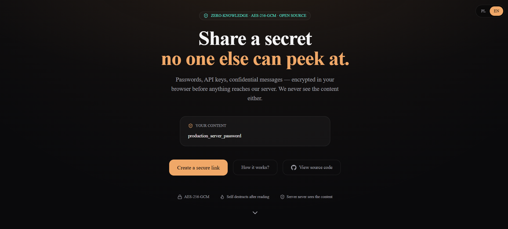
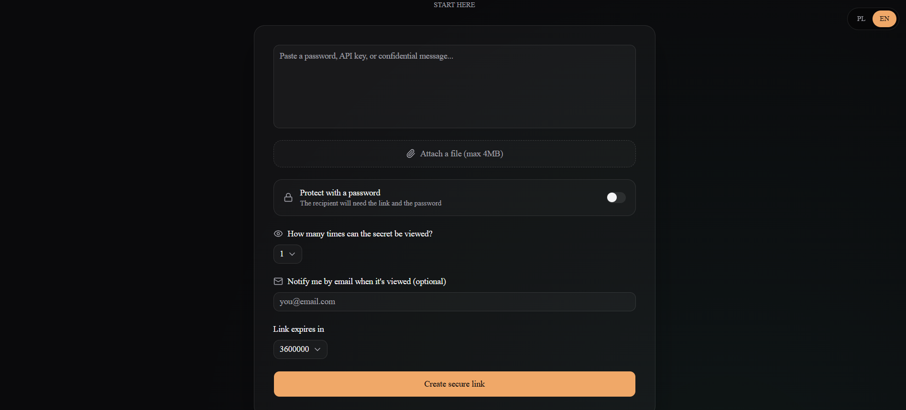
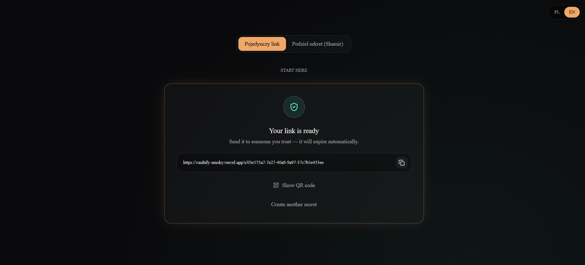
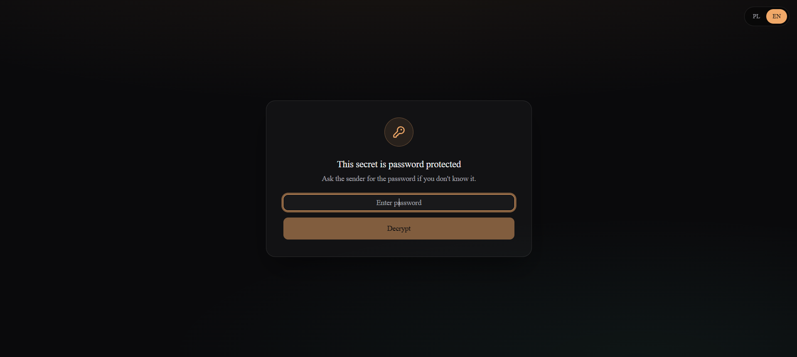
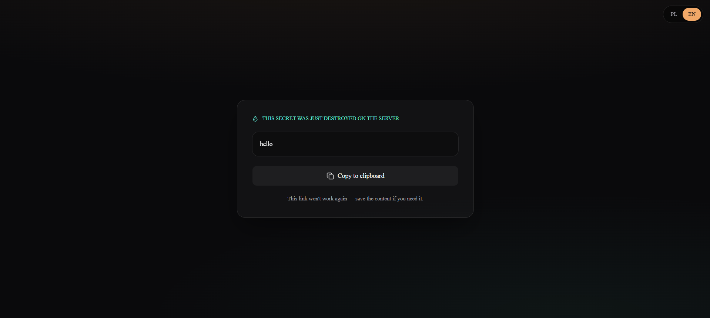

Vaultify
Zero-knowledge aplikacja webowa do jednorazowego udostępniania sekretów — hasła, klucze API i pliki szyfrowane lokalnie w przeglądarce, zanim cokolwiek trafi na serwer.
Aplikacja w akcji





Sekret, którego
serwer nie widzi
Vaultify pozwala utworzyć link zawierający zaszyfrowany sekret, który może zostać
odszyfrowany wyłącznie przez posiadacza klucza. Klucz nigdy nie trafia do serwera —
żyje jedynie we fragmencie adresu URL (#k=...), którego przeglądarki nie wysyłają.
Cała logika kryptograficzna działa lokalnie przez Web Crypto API, a backend przechowuje wyłącznie zaszyfrowany ciphertext i realizuje bezpieczny, jednorazowy odczyt danych z bazy.
Stack technologiczny
Jak to działa
W trybie bez hasła losowy klucz AES-GCM jest eksportowany do Base64URL
i umieszczany wyłącznie we fragmencie adresu URL (#k=...).
const key =
await generateEncryptionKey();
// url = `/s/${id}#k=${exportedKey}`
Tekst lub plik jest szyfrowany w przeglądarce (AES-GCM, 12-bajtowy IV) zanim ciphertext trafi do Supabase.
const { ciphertext, iv } =
await encryptData(plaintext, key);
Klucz jest wyprowadzany z hasła przy użyciu PBKDF2 z solą (600 000 iteracji). Klucz nie opuszcza wtedy odbiorcy.
const key = await deriveKeyFromPassword( password, salt, 600000);
Odczyt sekretu i jego usunięcie są atomowe, co eliminuje wyścig między dwiema równoczesnymi próbami odczytu.
SELECT ... FOR UPDATE; DELETE FROM secrets WHERE id = $1;
Klucz może zostać podzielony na udziały nad GF(256), zgodnie z arytmetyką używaną przez AES.
const shares = splitSecretBytes( keyBytes, totalShares, threshold);
Pod jednym hasłem ukryte są dwa niezależne szyfrowania. Aplikacja najpierw próbuje odszyfrować „prawdziwy” sekret, w razie niepowodzenia — wabik.
await decryptDuressSecret( ciphertext, password);
Operacyjne środki ochrony
Jak uruchomić
git clone https://github.com/Andrii418/Vaultify.git cd Vaultify npm install
cp .env.example .env.local # uzupełnij klucze projektu Supabase (anon / service role)
npm run dev
npm run build npm run start